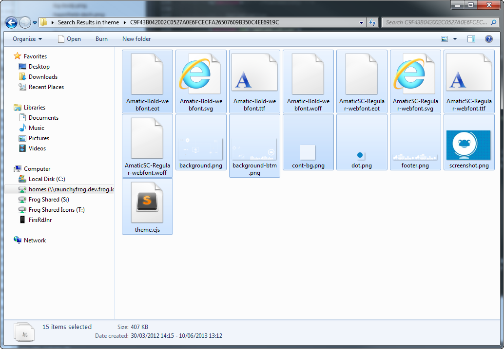

Frog 13
How to build a FrogOS Theme
FrogOS Advanced
Victoria Baron | Front End Interface Architect | @VBaronFrog
Flexibility scrolling, images, expanding content
Images
- Background images need to repeat
- Large images can still break
- Be careful with fixed images overlapping content
Expanding content
- Content is predicted by the user
- Headers - long words
- Content - 300px 3 columns
Optimization image sizes, using fonts, CSS gradients
Avoid large background images
- Slow load times
- Problems switching between themes
- Compression software, like kraken
File sizes
- Combined files 800kb or lower

- Need to be packaged up
Embed custom fonts
- Font Squirrel generator
- Download and embed Google fonts
- Header base sizes
CSS over Images
Structure .EJS, HTML, CSS, LESS, Navigation, Theme builder
.ejs = embedded javascript
- Combines data and a template to produce HTML
- This type of file is readable by FrogOS
- Use <%=DIR%> to call images
Build in LESS for scoped CSS
- Use LESS if you can.
- Crunch is a great Less compiler
- CSS should always have a unique wrapper class
Navigation
- Cheat!
- No reusable classes
- Remember the + page tab
Theme builder
Compatibility colours, backgrounds graceful degradation
Text colours
- White text on white backgrounds
- Widget colours
No javascript
- Frog OS is built with Javascript
- Conflicts
- Use .classes not #ids
Browser support
- No more IE7!
- All CSS2 & most CSS3 supported
- Graceful degradation